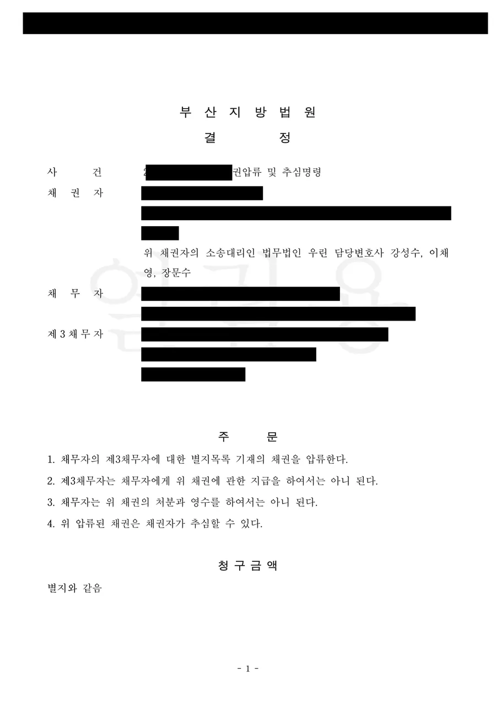

핵심 결과
소송에서 이겼다고 돈이 들어오는 것은 아닙니다.
판결은 받을 권리를 확인해 주는 문서일 뿐, 돈을 옮겨 주지는 않습니다.
돈을 실제로 가져오는 것은 집행입니다.
이 사건에서 의뢰인은 부당이득금 소송에서 이겼지만 상대는 갚지 않았습니다.
재산이 어디 있는지도 알 수 없었습니다.
법무법인 우린은 재산명시로 재산을 드러내게 한 뒤, 재개발 조합에 대한 현금청산금 채권을 압류하고 추심명령까지 받아냈습니다.
| 구분 | 내용 |
|---|---|
| 사건 분야 | 강제집행 (재산명시 → 채권압류 및 추심) |
| 집행권원 | 부당이득금 사건의 집행력 있는 판결정본 |
| 문제 상황 | 승소했으나 채무자가 임의로 갚지 않음, 재산 파악 불가 |
| 1단계 | 재산명시명령 (민사집행법 제62조 제1항) |
| 2단계 | 재개발 현금청산금 채권에 대한 압류 및 추심명령 |
| 최종 결과 | 압류·추심명령 인용, 회수 경로 확보 |
어떤 사건이었나
의뢰인은 부당이득금 소송에서 이겼습니다.
항소심까지 거쳐 집행력 있는 판결정본을 확보했습니다.
그런데 상대는 돈을 갚지 않았습니다.
부동산은 눈에 띄지 않았고, 통장에 돈이 남아 있을 것 같지도 않았습니다.
이런 상태에서 무작정 압류를 걸면 헛수고가 됩니다.
압류할 대상이 특정되지 않으면 신청 자체가 각하되거나, 걸어봐야 남는 것이 없기 때문입니다.
판결만 들고 있으면 벌어지는 일
- 판결금에는 지연이자가 붙지만, 채무자에게 재산이 없으면 숫자만 늘어납니다.
- 그사이 채무자가 재산을 처분하거나 명의를 옮길 수 있습니다.
- 다른 채권자가 먼저 압류하면 순위에서 밀립니다.
- 판결도 시간이 지나면 소멸시효가 문제 됩니다.
이겼다는 사실만으로 안심하면 안 되는 이유입니다.
상대 재산을 모르는데 어떻게 찾나요
재산명시 신청부터 하는 것이 순서입니다.
민사집행법 제62조는 집행권원을 가진 채권자의 신청에 따라 법원이 채무자에게 재산상태를 명시한 재산목록을 제출하도록 명할 수 있게 하고 있습니다.
채무자 스스로 재산을 적어 내게 하는 절차입니다.
강제력도 있습니다.
명시기일에 정당한 사유 없이 출석하지 않거나 재산목록 제출 또는 선서를 거부하면 20일 이내의 감치에 처할 수 있습니다.
거짓의 재산목록을 내면 3년 이하의 징역 또는 500만 원 이하의 벌금에 처할 수 있습니다.
| 집행 단계 | 하는 일 |
|---|---|
| 1. 재산명시 | 채무자가 직접 재산목록을 작성해 제출하고 선서합니다 |
| 2. 재산조회 | 명시로 부족하면 금융기관·공공기관에 조회를 신청합니다 |
| 3. 압류 | 드러난 재산이나 채권을 특정해 압류합니다 |
| 4. 추심·환가 | 추심명령을 받아 직접 받아내거나 매각해 배당받습니다 |
집행은 순서가 있는 절차입니다. 순서를 건너뛰면 헛돈만 나갑니다.
부동산이 없으면 회수할 방법이 없나요
아닙니다. 채무자가 남에게 받을 돈, 즉 채권도 압류 대상입니다.
이 사건에서 찾아낸 것이 그것이었습니다.
채무자는 재개발 구역 안에 부동산을 가지고 있었고, 조합에 대해 현금청산금을 받을 권리가 있었습니다.
현금청산금은 재개발 사업에서 분양을 받지 않는 소유자에게 조합이 지급하는 돈입니다.
아직 지급되지 않은 상태였지만, 장래에 받을 채권도 특정만 되면 압류할 수 있습니다.
그래서 채무자가 조합에 대해 가지는 현금청산금 채권 중 청구금액에 이를 때까지의 금액을 압류하고 추심명령을 받았습니다.
| 결정의 효력 | 내용 |
|---|---|
| 압류 | 채무자가 조합에서 받을 돈을 묶습니다 |
| 지급 금지 | 조합은 채무자에게 그 돈을 지급할 수 없습니다 |
| 처분 금지 | 채무자는 그 채권을 팔거나 받을 수 없습니다 |
| 추심 권한 | 채권자가 조합에서 직접 받아낼 수 있습니다 |
해결 전략
1. 재산명시로 판을 먼저 깔았습니다
압류할 대상을 모르는 상태에서 신청부터 하지 않았습니다.
집행권원을 근거로 재산명시를 먼저 신청했습니다.
채무자 입장에서 재산명시명령은 부담이 큽니다.
거짓으로 적으면 형사처벌 대상이고, 나가지 않으면 감치될 수 있기 때문입니다.
이 절차 자체가 협상을 여는 계기가 되기도 합니다.
2. 눈에 보이는 재산 대신 받을 권리를 찾았습니다
부동산과 예금만 보면 회수할 것이 없어 보이는 채무자가 많습니다.
그래서 시선을 돌려 채무자가 남에게 받을 돈을 찾았습니다.
재개발 구역의 소유자라면 조합에 대해 분양권이나 현금청산금 채권을 가집니다.
이 권리를 특정해 압류 대상으로 삼았습니다.
3. 개명 이력까지 확인해 동일인임을 정리했습니다
채무자에게는 이름을 바꾼 이력이 있었습니다.
이런 경우 서류상 이름이 달라 집행 단계에서 동일인 여부가 문제 될 수 있습니다.
결정문에 변경 전 이름을 함께 표시하고 주민등록번호로 동일인임을 특정해, 제3채무자가 지급을 미룰 여지를 없앴습니다.
결과
법원은 채권자가 청구금액을 변제받기 위해 집행력 있는 판결정본에 기초해 한 신청이 이유 있다고 판단했습니다.
최종 결과
채권압류 및 추심명령이 인용되었습니다.
조합은 채무자에게 현금청산금을 지급할 수 없게 되었고, 의뢰인이 직접 추심할 수 있는 권한을 확보했습니다.
판결만 들고 있던 상태에서 실제 회수 경로를 만든 것입니다.
추심명령을 받은 뒤에 할 일
추심하면 끝이 아닙니다.
채권을 추심한 때에는 집행법원에 서면으로 추심신고를 해야 합니다.
추심신고를 할 때까지 다른 채권자의 압류나 배당요구가 없으면, 추심한 금액 전액이 추심채권자에게 확정적으로 귀속됩니다.
반대로 추심신고 전에 다른 채권자가 압류나 배당요구를 하면 이미 추심한 금액을 공탁하고 그 사유를 신고해야 합니다.
이 신고를 놓치면 확보한 돈을 나눠야 하는 상황이 생깁니다.
자주 묻는 질문
| 질문 | 답변 |
|---|---|
| 승소했는데 상대가 안 주면 어떻게 하나요? | 집행권원을 가지고 재산명시, 재산조회, 압류·추심 순서로 집행 절차를 진행합니다. |
| 상대 재산을 모르는데 압류가 되나요? | 대상을 특정해야 하므로 재산명시나 재산조회로 먼저 드러내야 합니다. |
| 재산명시에 안 나가면 어떻게 되나요? | 정당한 사유 없이 불출석하거나 선서를 거부하면 20일 이내의 감치에 처할 수 있습니다. |
| 거짓으로 적으면 처벌되나요? | 3년 이하의 징역 또는 500만 원 이하의 벌금에 처할 수 있습니다. |
| 부동산이 없어도 회수할 수 있나요? | 급여, 예금, 임대보증금, 공사대금, 현금청산금처럼 받을 돈이 있으면 압류할 수 있습니다. |
| 추심한 뒤에 해야 할 일이 있나요? | 집행법원에 추심신고를 해야 합니다. 이를 놓치면 다른 채권자와 나눠야 할 수 있습니다. |
결론
판결문은 회수의 출발점이지 도착점이 아닙니다.
상대가 순순히 갚지 않는 순간부터 실제 싸움이 시작됩니다.
재산이 안 보인다고 포기할 일도 아닙니다.
부동산과 예금 외에도 급여, 임대보증금, 공사대금, 현금청산금처럼 채무자가 남에게 받을 돈은 모두 압류 대상입니다.
다만 다른 채권자보다 먼저 움직여야 합니다.
집행은 순서와 속도의 문제입니다.
본 사례는 의뢰인 보호를 위해 일부 내용을 각색했으며, 결정 결과는 실제와 같습니다.
사무장·상담실장 없이 변호사가 직접 상담합니다
집행은 먼저 움직인 채권자가 가져갑니다.
늦으면 다른 채권자와 나눠야 하고, 그사이 재산이 사라지기도 합니다.
법무법인 우린은 강성수 변호사가 직접 상담하고, 재산명시 신청부터 재산조회, 압류·추심명령과 추심신고까지 직접 진행합니다.
판결을 받고도 돈을 못 받고 계시다면, 지금 상대에게 어떤 권리가 남아 있는지부터 확인해야 합니다.
이 글은 일반적인 법률 정보 제공을 위한 자료이며, 개별 사건의 결과를 보장하지 않습니다. 구체적인 대응은 사실관계와 증거에 따라 달라질 수 있습니다.